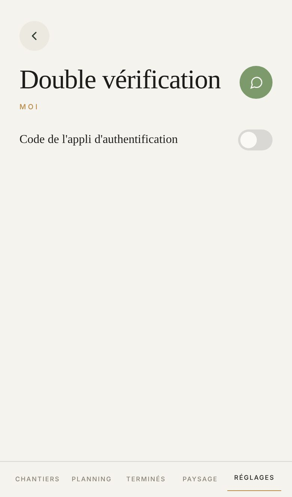

Proposé
Aujourd'hui

Ce qui change
- La ligne « Code de l'appli d'authentification » va dans une plage, avec un bouclier doré devant. Allumée, le bouclier passe au vert, et « Activée » se lit en vert avec le nombre de codes de secours qui restent.
- L'étape se lit d'un coup d'œil : trois traits qui se remplissent d'or, puis « Étape 2 sur 3 » en toutes lettres, et non plus en capitales espacées.
- Continuer, Vérifier et Terminer passent sous le pouce, au-dessus de la barre, toujours au même endroit. Les autres gestes restent creux.
- Le code se tape dans une grande case, en gros chiffres. Les dix codes de secours se lisent dans une plage, deux par ligne.
- Votre rôle l'impose : l'interrupteur grisé porte un cadenas et le dit en une ligne, au lieu de ne rien répondre quand on le touche.
- Éteinte, une plage bleue montre ce qu'elle ajoute : votre mot de passe, plus le code de votre téléphone. Aujourd'hui l'écran est vide sous l'interrupteur.
- Plus de « MOI » doré sous le titre.
Ce qui ne bouge pas
- Les trois étapes, dans cet ordre et avec leurs mots. Touchez l'interrupteur, puis Continuer, tapez six chiffres, Vérifier, cochez, Terminer.
- Rien ne se ferme avant le premier code juste : retoucher l'interrupteur en route abandonne, sans laisser personne dehors.
- Sur le téléphone, un bouton ouvre l'appli ; sur un ordinateur, c'est le code carré à scanner. La clé à recopier reste dans les deux cas.
- Terminer reste éteint tant que « Je les ai notés » n'est pas coché.
- Pour l'éteindre, un code de l'appli ou un code de secours. Un code faux le dit : « Ce code n'est pas le bon. »
- Obligatoire pour le patron et la facturation, en vrai seulement. Sur votre banc d'essai, personne n'est forcé, et l'état « Éteinte » est le vôtre.
À trancher
- La plage bleue de l'écran éteint : la garder pour dire à quoi sert la double vérification, ou laisser l'interrupteur seul comme aujourd'hui.